The Expert web app v0.3¶
The web app is the Expert-mode front end of the platform. In the app, data scientists upload
data, write and validate specs, fit them, inspect the fitted models and score them. The app
uses the same /v1 HTTP API as the CLI and the Python client. The app has no
special permissions. Each button is one or two API calls.
This page shows each page in the sequence of the navigation. The screenshots come from the
quickstart stack. make dev serves the app at
http://127.0.0.1:5173.
Guided mode
The Guided / Expert switch in the header changes all of the app to the task flow for
analysts. Your first analysis in Guided mode describes this flow.
The two modes edit the same ModelSpec.
The shell¶
| Element | What it does |
|---|---|
| Project switcher | Shows the tenant and the project for all the actions on the page, and your role there. You can switch to a different project, make a project (tenant admins) or open its members. See Authentication. |
| Sidebar | Home, Guided, Datasets, Build, Runs, Models, Score, Workflows, Governance, Integrations, Catalog and Help me choose. In Guided mode, Guided, Help me choose and Recipes (the workflow gallery as ready-made recipes) come first, and Home does not show. A project that is locked to Guided mode shows those three items and Integrations. Under Project: Usage, Members and Tokens. Under Platform: Admin (operators only). Settings is at the bottom. Collapse (Cmd+B) makes the sidebar narrow, with only icons. |
| Jump to… (Cmd+K or /) | A command palette. Go to a page, start a new spec, change the theme, or paste an id (run_…, mdl_…, ds_…, spc_…) to open it. |
| API connected | Polls GET /readyz. It is green when PostgreSQL, the object store and the catalog are ready. Otherwise, it is amber (API degraded) or red (API unreachable). It links to Settings, which shows each check. |
| Guided / Expert | The persona switch. This browser remembers it for each user. Until you make a selection, a self-service (public tier) workspace starts in Guided mode. All other workspaces (and platform operators) start in Expert mode. In Guided mode, / opens the Guided start page. If a project is locked to Guided mode, members below admin do not see the switch. |
| Display icon | Light, dark or system theme. |
| ? | The keyboard shortcuts. Single keys work when no text field has focus: G then H Home, G Guided, D Datasets, B Build, R Runs, M Models, S Score, W Workflows, V Governance, I Integrations, C Catalog, O Help me choose, , Settings. |
The app always shows text from a run or a plugin as plain text. This text includes log lines, tracebacks, warning messages and plot captions. The app removes ANSI escapes, control characters and bidi characters from it. The label untrusted output shows next to this text.
Home¶
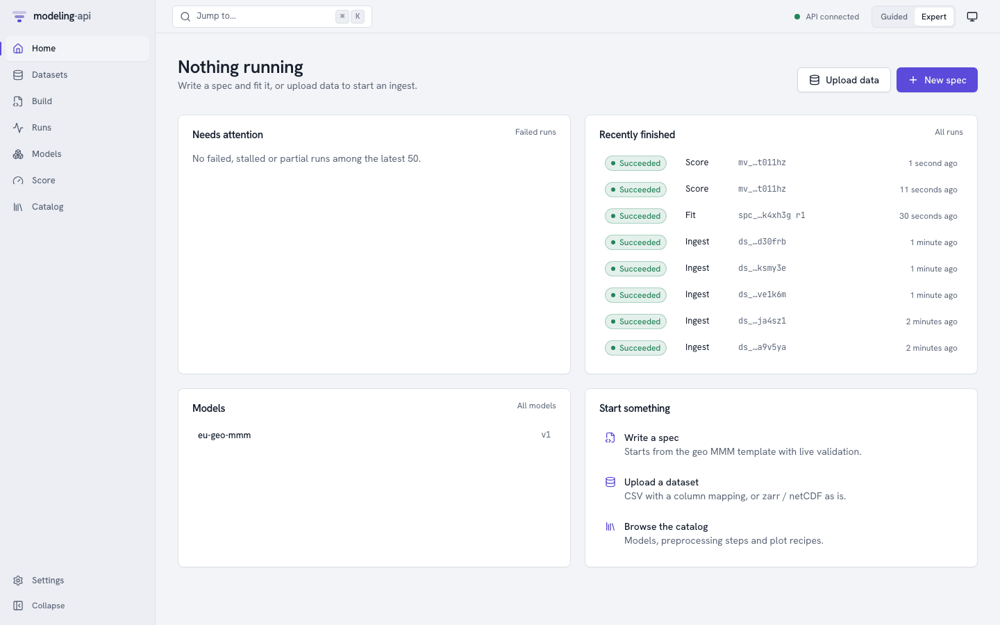
The landing page tells you if work is in progress and if something needs your attention:
- Running (the heading shows Nothing running when no run is active): the active runs with their live progress bars.
- Needs attention: the failed, stalled or partial runs in the latest 50. Each one links to its run page.
- Recently finished: the latest runs of all types, with their state and input.
- Models: the registered models with their latest version.
- Start something: write a spec from the geo MMM template, upload a dataset or look at the catalog. Upload data and New spec in the header do the same.
Datasets¶
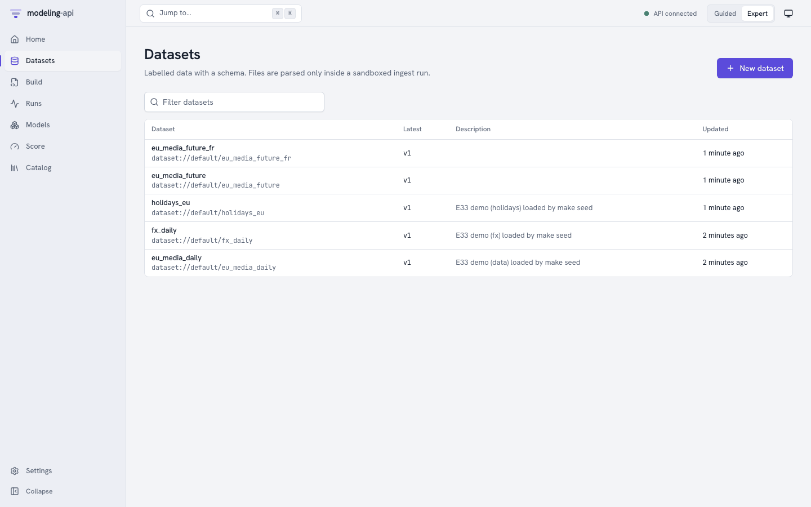
A dataset is a named collection of immutable versions.
- Click New dataset.
- Type a name (lowercase letters, digits,
_and-). - If necessary, type a description.
The app then opens the upload panel.
Upload a file. Select a file:
- A zarr zip (
.zarr.zip) or netCDF (.nc) file describes itself. The app uses its dims and coordinates without changes. If the file has amapi_schemaattribute (roles, policies, units), the app also uses it without changes. -
Your browser shows a preview of a CSV file. The server never parses the file. Map each column:
- A dim: give its kind (
time,categorical, …), its score-time policy (fixed,extend,new_levels) and its frequency. - A variable: give its role (
target,spend,covariate, …), its units and its missing-value rule.
You map Parquet files in the same way, but without the local preview.
- A dim: give its kind (
-
A NetCDF-4 or HDF5 file with groups (
.nc,.h5,.hdf5,.he5) becomes a tree dataset: one node for each group. A raw HDF5 file has no dim names. The app inspects the file first and shows its arrays (path, shape, dtype and dim hints). Then you map each array to a variable with its dims, role, units, missing-value rule and coords.
Several files in one version v0.8. You can select more
than one file. For each file, give the node of the tree where it goes and how it joins the
other files of that node: alone, stacked along a new dim (one label for each file), or merged
on shared coords. A label is a number (2024) or text (NL); a label with a leading zero
(007) stays text. The app checks the node paths, the combine rules and the HDF5 mapping
before it uploads, and shows every problem at once, next to the field it is about (a screen
reader announces it). The Nodes tree also works with the keyboard: the arrow keys, Home
and End. For NetCDF and Zarr files, Preview
structure inspects the file and shows its groups and arrays.
The version page of a tree dataset has a Nodes tab: the tree of nodes, with the schema and
the coords of each node, and the preview of the default node. Explore this node opens the
Data Explorer, which has a node picker. In the spec editor, the completions and the Insert
panel offer the nodes of the dataset for data.nodes and their variables for vars. Refer to
Tree datasets, HDF5 and multi-file versions.
Upload and ingest sends the file directly to object storage through a signed PUT URL. The
API never sees the bytes. Then the app starts an ingest run in the sandbox. The page
refreshes until the version is ready. If the ingest finds issues, the page shows them in
plain language ("3 markets are missing 2 weeks in March").
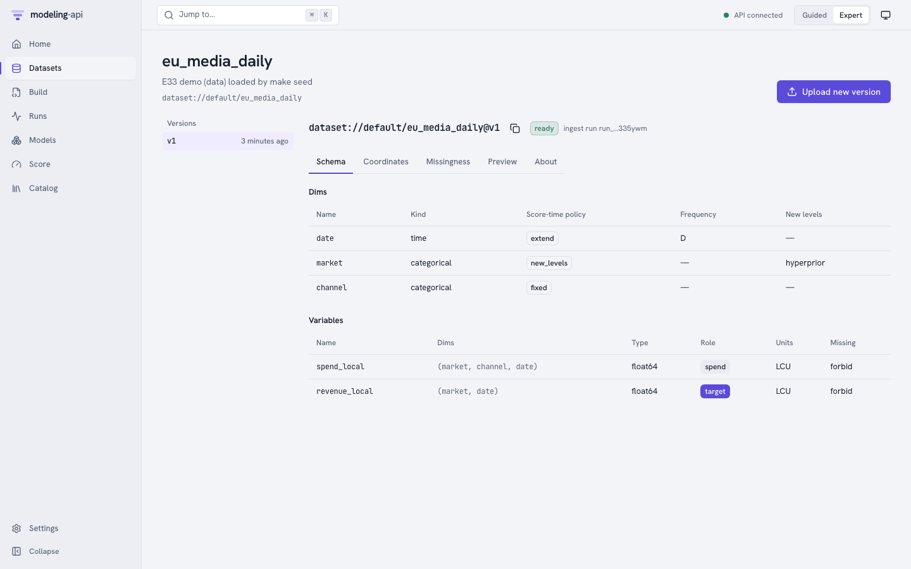
A version page has five tabs:
| Tab | Shows |
|---|---|
| Schema | Dims with kind, score-time policy, frequency and new-level strategy. Variables with dims, dtype, role, units and missing-value rule. |
| Coordinates | The coordinate range and values of each dim. You can search them when there are many. |
| Missingness | A heatmap of missing values for each variable along the time dim. The plot sandbox renders it. |
| Preview | The first rows, as the ingest run wrote them (preview.json) |
| About | The content hash, the size, the ingest run, the date of creation and the version message |
dataset://default/eu_media_daily@v1 (the copy button next to the title) is the reference
that specs and score requests use. When you submit a run, @latest resolves to the newest
ready version. The run records the version that it got.
Build¶
Build shows a list of the specs with their latest revision. It also shows if each revision is valid. New spec opens the editor on the geo MMM template.
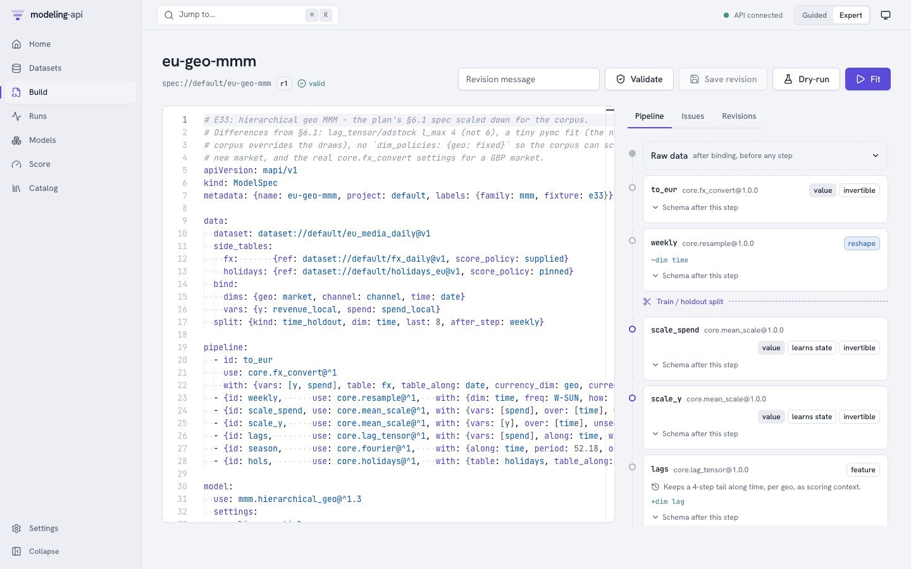
The editor is Monaco with YAML support. It uses the modelspec.json schema of the server.
Thus, it completes keys and shows the documentation of a field when you hover over it. When
you type (and when you push Cmd+Enter), the app sends the spec to
POST /v1/specs:validate. The server then does these steps:
- It resolves each
dataset://reference, step and model plugin. - It checks the settings against the sanitized JSON Schema of the plugin.
- It propagates the data schema through the pipeline. For this, it uses the exported schema effect of each step.
Problems show as squiggles at the exact YAML path and in the Issues tab. Each problem has
its error code (LEAKAGE_RISK, SCHEMA_INVALID, …). The badge below the title shows valid
or the number of errors.
The right-hand panel:
| Tab | Shows |
|---|---|
| Pipeline | The raw data after binding, then one card for each step. Each card shows the plugin and version, and the kind of step (reshape, value, feature). It also shows if the step learns state and is invertible, and the dims that it adds or changes. It also shows the context tail that it keeps for scoring, and Schema after this step. The Train / holdout split marker is at the position that data.split.after_step sets. |
| Issues | Each validation issue with its code, JSON pointer and message |
| Revisions | Each saved revision, with its message. Select two revisions to see a diff. |
The buttons:
- Save revision (Cmd+S) stores the text as a new immutable revision (
r1,r2, …) with the optional message. You can also save revisions that are not valid. Thus, you never lose work in progress. You cannot fit a revision that is not valid. - Dry-run starts a
validaterun of the saved revision in the sandbox. It checks the real data against the spec, one array at a time. It fits the pipeline on the data (not the model). It records the schema at each stage. Use it when the effect of a step is dynamic. Also use it when the static check passes and you want to know if the data really fits. - Fit submits a fit run of the saved revision and opens its run page.
Runs¶
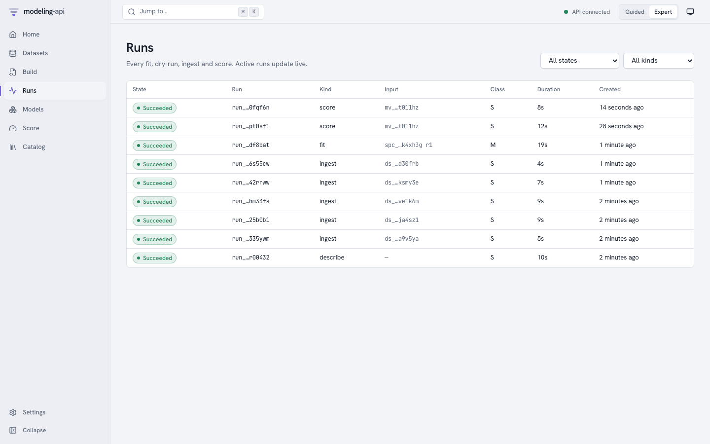
Each ingest, describe, dry-run, fit and score is a run. You can filter the list by state and by type. The list updates live.
Run detail¶
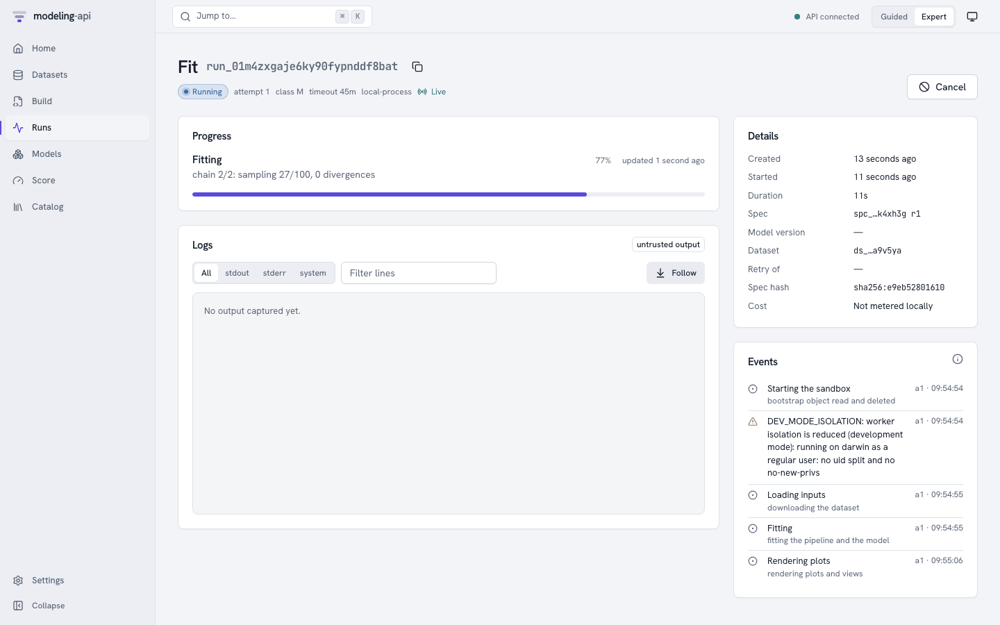
The run page subscribes to the server-sent event stream of the run (Live next to the state).
After a disconnect, it continues from the point where it stopped.
- Progress: the current phase (Starting the sandbox, Loading inputs, Fitting,
Rendering plots, Uploading outputs, …), the latest message from the runner and a
progress bar. For a PyMC fit, the message shows the chain, draw and divergence counts.
No progress reported recently shows when a run is quiet for longer than expected. The
app then marks the run as
stalled. This is a warning, not a failure. The status from the executor tells if the run is alive. - Logs: the stdout and stderr that the supervisor captured from the worker. The logs have a size limit, and the app removes unsafe characters. Use the All / stdout / stderr / system filters, a text filter and Follow.
- Details: the timestamps, and the spec revision, model version or dataset of the run. It
also shows the spec hash, the run that it retried and its cost (
Not metered locally). - Events: each persisted event, with diagnostics and metrics. On a laptop, this includes
the
DEV_MODE_ISOLATIONwarning.
Actions:
- Cancel: stops an active run. Fits with checkpoints stop as
partial. - Resume: a
partialrun continues from its checkpoints as a new attempt. - Retry: makes a new run from a failed run. After
RESOURCE_EXHAUSTED, the dialog recommends the next resource class.
A fit that succeeded links to its model version: Inspect model://default/eu-geo-mmm@v1.
Models¶
Models shows a list of all the models (one for each spec name). The model page shows a list of its versions. After each fit that succeeds, the platform verifies the outputs of the run and signs the bundle manifest. Then it registers a new version. The version page has six tabs and a Score button.
Overview¶
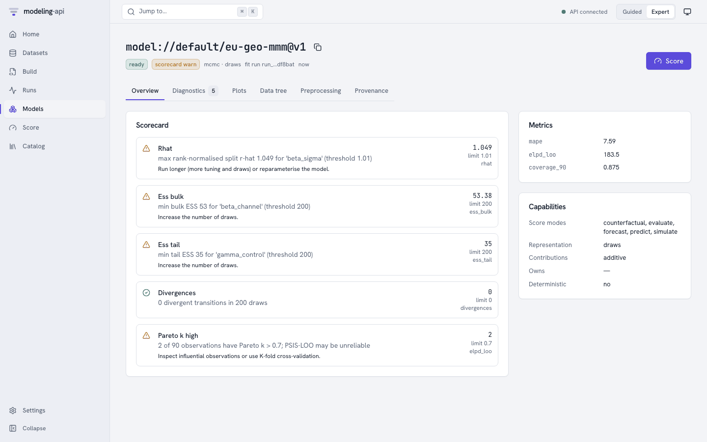
The Scorecard collects the diagnostics into pass, warn and fail items. Each item has a
plain-language message, the metric and its threshold, and a suggested action. Metrics
are the holdout metrics that the spec asked for (evaluate.metrics). The platform calculates
them before the refit. It scores the holdout through the normal score path. Capabilities
come from the plugin. They are the score modes, the representation (draws, quantiles,
interval, point, moments) and how contributions combine. They also tell which
preprocessing the model owns, and if results are deterministic for a seed.
Diagnostics¶
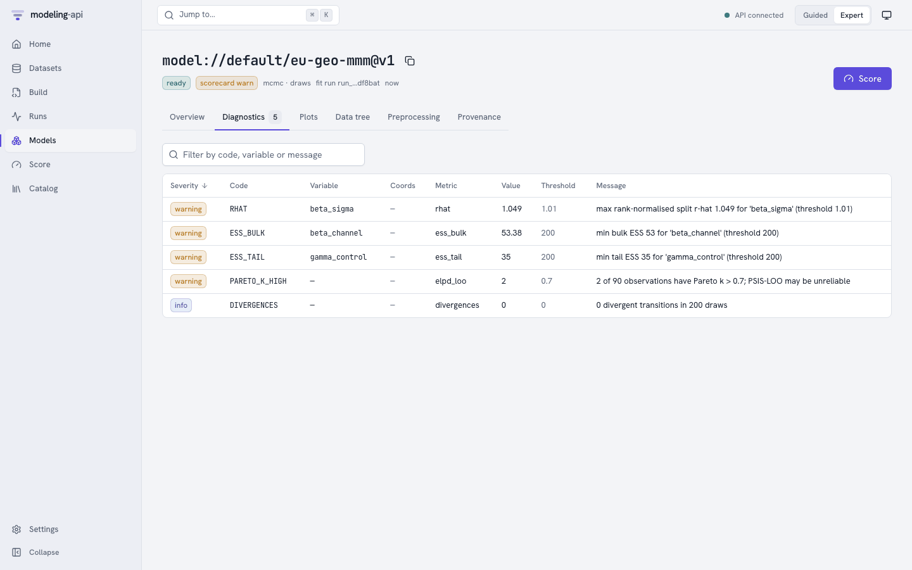
The table has one row for each check and variable. You can sort and filter the rows. The checks are R-hat, bulk and tail ESS, divergences and Pareto k. A row can also show "LOO invalid" with the reason from the plugin.
Plots¶
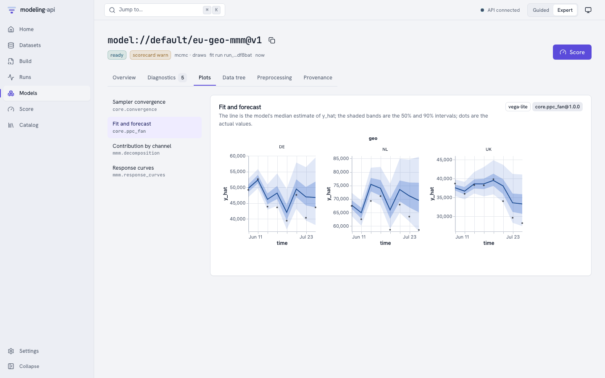
This tab shows the plot recipes that the spec lists in outputs.plots. The app renders them
from the precomputed plot data in the bundle. Each card tells the recipe that made it
(core.ppc_fan@1.0.0) and the library (vega-lite or plotly). Each card also has a
plain-language caption.
All plots, also the first-party plots, render in an <iframe sandbox="allow-scripts">. This
iframe comes from the own origin of the plot sandbox (port 5174 locally). The sanitizer of
the server checked the specs when the run finished. It checks them again on each read. Before
a chart library runs, the sandbox refuses URL data, links, external images and tile maps. The
two windows communicate only through a small, validated postMessage protocol. See
Web app and plot sandbox.
Data tree¶
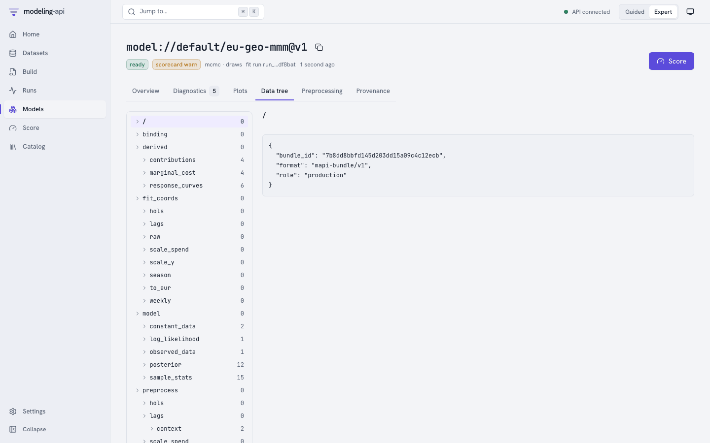
This tab is a browser for the ui/tree_index.json file of the bundle. It shows each group of
the fitted bundle with its variables, dims, shapes, units and attributes. The groups are
binding, fit_coords for each stage, model/posterior, sample_stats, log_likelihood,
preprocess/<step>/{arrays,context} and derived/…. The tab reads only the index. The
arrays stay in the bundle. You can download the bundle from Provenance or with the
client.
Preprocessing¶
This tab shows a heatmap of the learned state of each step (for example
scale(geo, channel)). The data comes from the ui/preprocess.json view of the bundle. The
tab shows each step in sequence with its resolved plugin, and if it is stateful. It also
shows its learned JSON and its numeric state arrays. For larger arrays, the list tells that
they are omitted. You can also see the full state under preprocess/ in Data tree.
Provenance¶
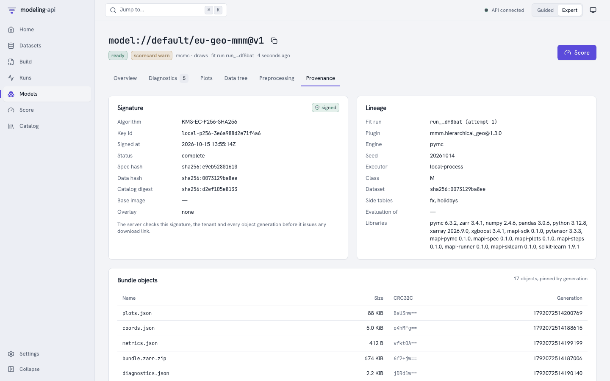
- Signature: the signature of the bundle manifest (EC P-256 locally, in place of Cloud KMS), its status, and the spec, data and catalog hashes that it binds. Before the server gives a download link, it checks the signature, the tenant and each object generation.
- Lineage: the fit run and attempt, the plugin and version, and the engine and seed. It also shows the executor and resource class, and the dataset and side-table versions. It also shows the evaluation bundle that the model was fitted again from, and the library versions in the runner.
- Bundle objects: each stored object with its size, CRC32C and generation. You can open or download each object through a short-lived signed URL. The app compares the download with that CRC32C.
Score¶
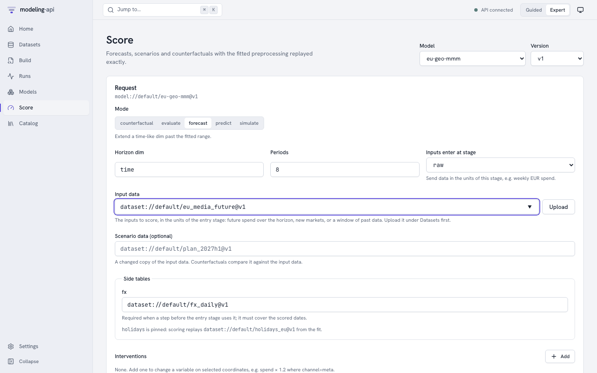
Select a model and a version, or come to this page from a model page. The app makes the page
from the inputs of the version (GET /v1/models/{id}/versions/{v}/inputs). Thus, the page shows
only the options that the model can do. The server checks the request statically before a run
starts.
What this model needs shows these items:
- The variable that the model predicts.
- The inputs that the model reads. A label shows the inputs that the model needs on future periods, for example planned spend.
- The data that the model was fitted on: the fitted date range and each level of the other dims.
The names are the canonical names of the spec (its data.bind).
Then do the steps of the form:
| Step | Meaning |
|---|---|
| What do you want to do? | Select a mode. The page shows only the modes that the plugin declares: Forecast, Predict, What if (counterfactual), Simulate, Evaluate and, for state-space models, Update with new data (filter). |
| How far ahead? | For a forecast: type the number of periods after the fitted end. The model uses its own time dim. |
| Values to score | Select one: Type values, Use a dataset or No new data. The grid of Type values starts with the periods to score and each fitted level. You can paste rows from a spreadsheet. You can also use Fill blanks to put one value in all the empty cells of a column. The app sends typed values inline (ScoreCall.inline, a maximum of 5 MB). The server checks them against the inputs of the model. You do not upload a file. For Use a dataset, Upload makes a dataset. Evaluate and filter need a dataset. No new data shows only for a forecast, which continues from the end of the fit, or when you give a Scenario dataset under Advanced. For predict, simulate and what if without a scenario dataset, the server refuses a request without data. The page then does not show the option, and a note tells you why. If the model cannot forecast, the note tells you that the model always needs values to score. |
| Future values … not given | For a forecast: select the value that empty future inputs get. The options are the last value, the value of the same period one year before, zero, or none. If you select none, you must give each value. |
| Changes | Change a variable on some levels before the model scores, for example multiply spend by 1.2 where channel=tv. What if compares the result with the changes and without them. |
Advanced contains the other fields:
| Field | Meaning |
|---|---|
| Inputs enter at stage | The position where the data of a dataset goes into the pipeline. This can be raw (the units of the dataset), or a later stage, for example weekly, to send weekly EUR spend directly. The pipeline skips the steps before the stage and their side tables. Typed values go into the pipeline at raw. |
| Scenario dataset | A changed copy of the input data. What if compares it with the input. |
| Side tables | Tables with score_policy: supplied (here fx) use the version from the fit by default. They must cover the scored dates. The platform uses pinned tables again from the fit. |
| Quantity | Expected (the mean response) or Predictive (with observation noise) |
| Units, Names | Original units (inverted back through the pipeline) or model space. The names of your dataset or the canonical names of the plugin. |
| Summaries, Draws | The summaries to return (mean, median, sd, hdi_50, hdi_90, quantiles), and the number of joint draws. 0 returns only summaries. Counterfactual deltas need draws to show their uncertainty. |
| Variables, Seed | Limit the outputs. Set the seed to get draws that you can reproduce. |
A checklist above the button shows the data that the app will send. It also shows the data that is missing. The button shows the name of the mode, for example Forecast or Predict.
The button sends POST /v1/models/{id}/versions/{v}:score with Prefer: wait=30 and an
idempotency key. Then the page follows the run.
You can send actuals with a forecast if the model can use them. The grid then has a column for the target. The run also returns predictions on the periods of the actuals. These predictions are one-step-ahead: each one is the value that the model expected before it saw the actual. Predictions against your actuals shows these items:
- The number of actuals that the app compared.
- The typical error and the percentage error.
- The percentage of actuals that are in the band.
- A chart for each series. The actuals show as diamonds. After the last actual, the forecast shows as a dashed line.
- A table with the error for each period.
The run returns the actuals that it used in ScoreSummary.actuals.
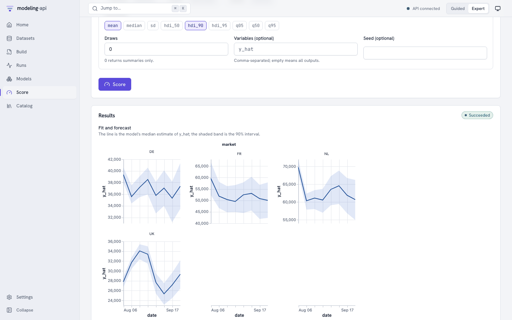
Results shows these items:
- The plots of the run: a forecast fan for each market, or the scenario against the baseline for a counterfactual.
- The outputs with their sizes and signed links.
score.zarr.zipis the fullxr.DataTree.ui/summary.arrowis the summary table. - The summary as a table, with one row for each coordinate and one column for each statistic.
A dim with numeric labels stays a key column, for example the grid positions
y_cmandx_cmofsci.heat_plate. Thus a grid output keeps one row for each cell. The summary table names its dims in the schema metadatamapi.dims. - A quick chart. You can plot it again by a different column.
If the model did not see a market before (for example FR above), the platform draws it from
the fitted hierarchy. Thus, its band is wider. The issues of the result tell this.
Workflows and governance v0.5¶
Workflows builds, runs, schedules and monitors workflows. It has a template gallery, a visual editor and a live run monitor. The editor has a node palette, typed ports and a YAML view. See In the web app. Governance edits policies, follows validations and holds the queue of the reviewers. See In the web app.
Since v0.9, the run monitor draws the plots of a workflow run. These are the plot outputs of
nodes (plot.render, model.forecast and evaluate.residuals) and the plot sections of a
report.summary. Each plot of a node shows with its caption. If the data of a plot is in a
file, the app tells you to click Download. The HTML report does not show plot sections.


The screens link to each other:
- A finished workflow run links each model that it fitted to the Model Explorer. It also links each model to the validations of the version. These links are in the run summary, in the runs of the fit step and in its outputs. The run page of a workflow run opens its monitor. The lineage of a model links back to the workflow run that fitted it.
- The header of the Model Explorer shows the validation status of the version. This is a link to the validations of the version. Under Governance evidence, the Model Explorer links to the latest validation and the policies. A validation links back to the Model Explorer and to the run that calculated its checks.
- The Data Explorer for data over time offers the readiness workflow, with that data already bound. In Guided mode, this is the Run this recipe page. In Expert mode, this is the template wizard.
- Start with this on an About card or on a Help me choose result opens a workflow template. In Guided mode, it opens as a recipe. In Expert mode, it opens in the template wizard. For a governance check, it opens the check in the check catalog. In Guided mode, a model opens the guided template that uses it. If a model has no guided template, the app shows Set up in Expert mode (a deliberate switch). The app does not open the spec editor.
Catalog¶
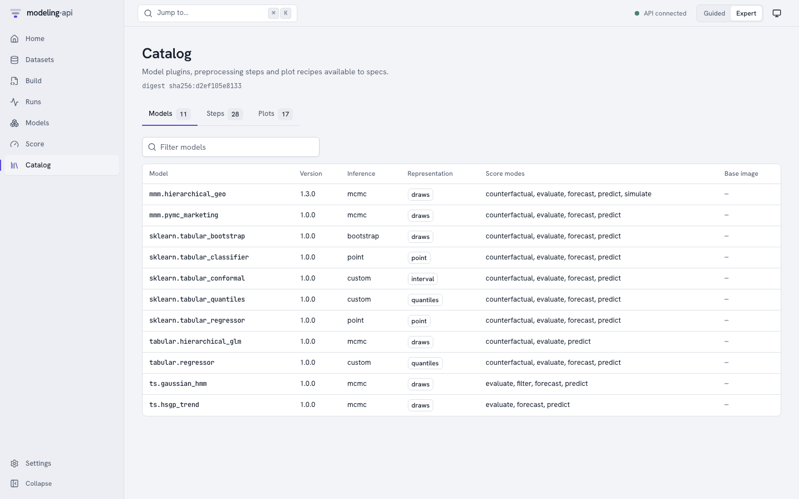
The catalog shows the contents of the runner image. Its sandboxed describe run exports these contents, and its digest identifies them:
- Models: inference, representation, score modes and base image.
- Steps: kind, if it learns state, invertibility and summary.
- Plots: a card for each plot recipe, with an example plot made from synthetic data, its
pack, its title, a summary and the bundle groups that it needs. The buttons above the cards
filter the recipes by pack: All plots, All models (
core), Marketing mix (mmm), Machine learning (ml), Science (sci) and Networks (net). A pack shows only when the catalog has a recipe of that pack. You can also type words in the search field.
Click a row of Models or Steps to see its full entry. Click a plot card to see its About card, a larger interactive example and its technical details. Specs can use only the items in this list. The generated catalogs have the same data.
Since v0.5, the catalog opens on Browse. It shows each item that a user can select, with its plain-language About card. Help me choose is one click away (see About cards and choosing).
Explorers and budget plans v0.5¶
- Explore this version on a dataset version opens the Data Explorer.
- Explore on a model version opens the Model Explorer. It shows parameters, diagnostics, fit, residuals, contributions, response curves, IRF/FEVD, forecasts, backtests, governance evidence and lineage.
- Compare shows some versions side by side with Diebold-Mariano tests.
- Optimise budget makes a plan for a marketing budget.
Settings¶
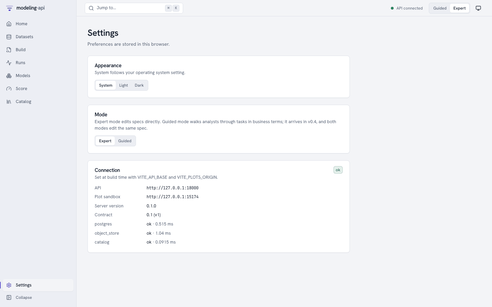
This browser stores Appearance and Mode. Project admins also see Lock … to Guided
mode under Mode v0.4. This is the persona lock of the
project. The server stores and audits it (see
Guided mode). Connection shows the API and
the plot sandbox that the app was built for (VITE_API_BASE, VITE_PLOTS_ORIGIN). It also
shows the server and contract versions, and the latency of each readiness check.
Organisation admins also see Data v0.4. Here, they can do a GDPR export of all the data that the organisation stored. They can also delete the organisation. The deletion has a 7-day grace period, and they can cancel it in that period. See Settings > Data.
Integrations v0.4¶

This is where a model goes out of the platform. It has Guided cards for Google Sheets, a BI dashboard and a webhook. It also has these Expert pages:
- Endpoints and aliases that you promote through the scorecard gate. These pages have the history, rollback, the input contract, Try it and snippets in six languages.
- Webhooks with their delivery logs and replays.
- Saved plots with PNG/SVG/PDF downloads and embed links that expire.
The Share button of a plot gallery also starts here. The Integrations hub describes each page.
If the server permits self-service sign-up, the sign-in screen links to the public sign-up page. See Sign-up and e-mail verification.
Guided¶

This is the task flow for analysts:
- Select a template.
- Answer questions about the data.
- Tell what you believe.
- Fit the model.
- Read the report and the sanity scorecard.
- Try what-if scenarios.
- Share the result.
Each step has its own URL and View as YAML. For a full example, see Your first analysis in Guided mode.
Usage, Members, Tokens and Admin v0.3¶
These pages help you operate the platform for many persons and organisations. The Administration guide describes them, with screenshots:
| Page | Who sees it | What it is for |
|---|---|---|
| Usage | All members of the project. Organisation needs a tenant-wide admin. | Cost and quota use for a UTC day or month |
| Members | All members. Changes need an admin. | Who has which role, invitations |
| Tokens | All members (their own tokens). Admins see the tokens of all members. | API tokens: create, list, revoke. ?preset=score:<alias> opens a token for one endpoint. |
| Admin | Platform operators | Tenants, quotas, kill switches, executors and the audit log. v0.4 adds the sign-up review queue and tenant trust. |
Where next¶
- Your first model in the web app: the E33 demo, step by step in the app, from upload to counterfactual.
- Web app and plot sandbox: build variables, the API client and the security headers.
- Security model: the risks that the sandbox and the plot iframe prevent, locally and in production.